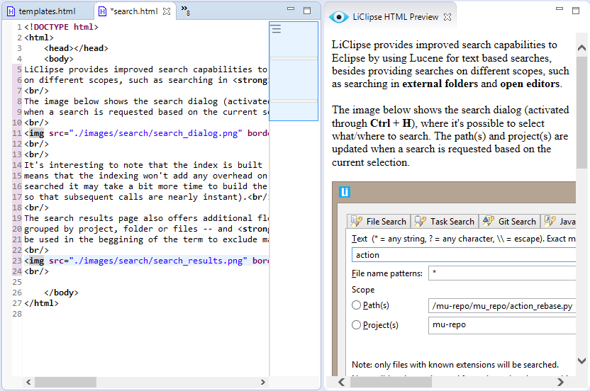

HTML preview
In LiClipse, it's possible to see an HTML preview for the HTML,
Markdown and RST editors
(it can be activated in Window > Show View > Other > LiClipse > LiClipse HTML Preview, or
by using Ctrl+3 > LiClipse HTML Preview).
To work properly for RST and Markdown, it requires that Pandoc is installed and
available in the PATH (note that after installing it and adding it to the PATH, LiClipse must be restarted to
pick up the changes to the PATH environment variable).
After the view is shown, it'll update automatically when a new editor
is focused and after text is changed in the editor.
Image showing the HTML preview (note that all references -- such
as css, images, etc -- must be relative to the file being currently edited to appear properly):
